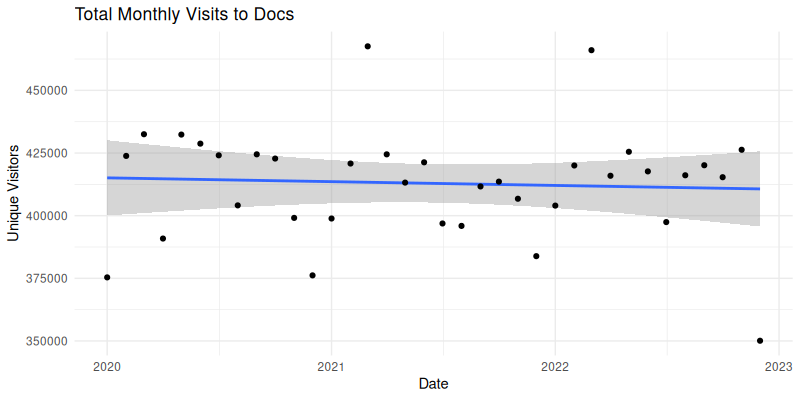
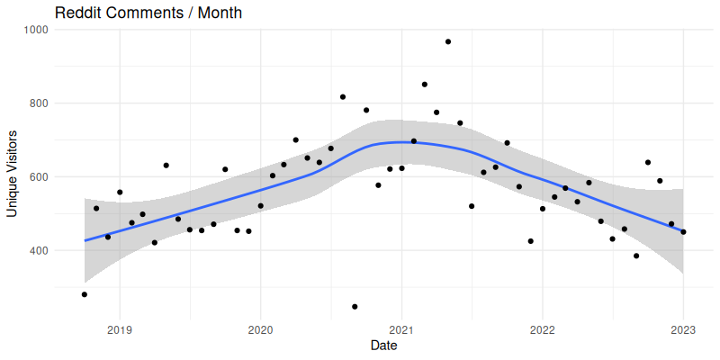
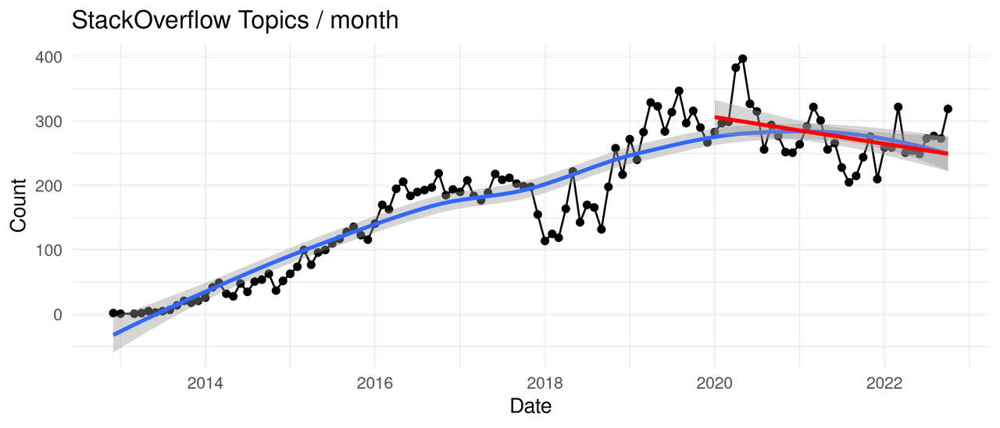
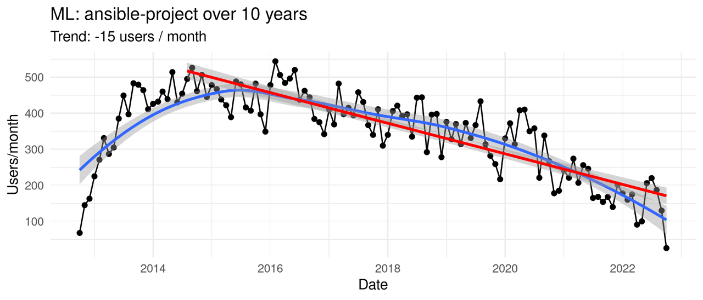
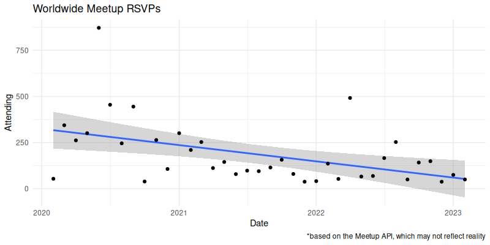

Ansible - State of the Community 2023
Welcome! In this series of posts, I'm going to lay out my vision for what I think the Ansible Community needs to do over the next year or so - and I hope that by the end, you'll agree with me (and will join in the discussion topics).
TLDR; I'm going to try and convince you that:
- We're a big project but the trends are not good.
- The community is has many parts but is becoming fragmented.
- The community has no effective voice (no single website, blog, or discussion place).
- We need to build a community website separate from Ansible.com.
- We need to build a forum to bring discussions/support together.
In this post I'll lay out where we are today - if you already watched my talk on this from CfgMgmtCamp 2023 then you can probably skip this one, as it covers the same topic. In the second one I'll make the case for the website & forum.
The state of the community today
There is no doubt that Ansible is huge. Whether we talk about the userbase, or the contributors, it's a massive project, with (probably) millions of users, and thousands of contributors. Well done, us! But all is not well in Ansible-land, and to illustrate let's take a look at some graphs.
User-base graphs
First, let's talk users. These are very hard to measure in open source, because no-one needs to tell you they're using your project. The download sources are many (PyPI, OS packages, sources, etc) and often cached. Discussion spaces are just as varied. Social media subscription never decreases (people don't unsubsribe, they just stop reading). Most users will never raise an issue, or ask a question (at least in public).
Absolute numbers are therefore largely useless - but we can look at trends. For trends that vary properly (e.g. not site-followers, which never decrease), if we see similar trends across a set of metrics, we can have some faith that the trend is real.
So, lets look at four such metrics:
Visits to docs.ansible.com

Comments on reddit.com/r/ansible

Questions tagged ansible on StackOverflow

Posts to the ansible-project mailing list

These graphs worry me. Sure, half-a-million hits per month on the docs is great, but none of these are positive trends - Docs is flat, and the other 3 are declining. Is our tooling now so good that users don't need to ask questions anymore? Have all the possible Ansible questions already been asked? Seems unlikely to me. But let's continue, and see what else we could look at...
Contributor-base graphs
Our GitHub presence is huge - at one time (in 2020, when it was all in
ansible/ansible) we were the 8th largest project on GitHub. But what does it
look like today?
To answer this, I'm going to use a stricter definition of an active GitHub contributor. I won't go into the maths here, but it basically involves counting all issues, PRs, and comments created by a user, giving them weights, and then applying a time-based decay. In other words, it requires either a significant recent burst of activity, or sustained involvement over at least a few weeks/months. To put that in context I don't meet that bar, since much of my work is in other spaces at the moment.
So, how many active contributors do we have? I index ~500 repos that are relevant to Ansible, and this is the result:

I cannot stress enough how huge 850 highy-active contributors is! It blows
my mind every time I look at this dataset. But again, it's lower than it was a
year ago. We could also look at a few other subsets... here we just look at all
the Collections repos that go into the full ansible package:

Same story. Here's just ansible/ansible:

Same again. I could show you more, but across most of the project, this pattern repeats - of all the sections I checked, only DevTools was increasing as of Jan 2023.
Contribution is not all about GitHub though. What about discussion elsewhere? We've already shown a plot for the mailing list, but what about chat?
Matrix Users per Day, smoothed for weekly variation

This one has one piece of good news (for me anyway!) - Matrix use is growing, and has been all year (in fact 60% of our daily users in chat are coming from Matrix). That's a win for my previous big proposal. But IRC is declining, and faster than Matrix is growing, so again, the total trend (top line, red) is declining.
One last one - meetups. This is no surprise given the pandemic, but it shows the same trend:

Taking stock
So what's going on? Any of these plots could have multiple explanations, but I can only think of two that expain all of them.
Firstly, the one I don't think is true, but let's get it out of the way. Is the project actually dying? All projects (just like all products) have a Growth/Maturity/Decline curve - as a project ages, you expect early contributors to give way to users, and then eventually the users to leave too, especially if the project's mission is no longer relevant.
Does this fit? If we were in "growth" I would expect the contributor metrics to be rising. If we were "mature" then user trends would be on the up. So, that only leaves "decline"? Right?
I don't buy it. Ansible's mission ("radically simple automation" according to PyPI) is still as relevant as ever. Discussion at conferences and with industry friends suggests there are still plenty of things to automate. There are competitors, yes, but nothing so new-and-amazing (that I know of) which would pull significant numbers of existing users away.
Which leaves option 2. If nothing is pulling users away, then we are pushing them away, or at least not holding their attention and making it easy to participate. Let's look at what's possibly causing that...
Tenets of strong communities
We'll take the interest in our mission as a given - if you don't want to automate things, Ansible is not your project. But if the project fits your goals, then what else do people look for in a community? What things help to ensure a community continues to progress? These things are common to all communities (even offline ones, I would argue):
- Strong Mission: Without which cohesion is lost.
- Transparency: Being open about decision- and rule-making.
- Diversity of Opinion: Learning from the wisdom of the crowd.
- Decentralization: Self-organization over imposed structure.
- Fair Authority: All must abide by the same rules.
- Free Entry: Easy to find, low barrier to participation.
(With thanks to Social Architecture, Pieter Hintjens)
I could write a page on each of these (and Pieter did, if you want to read them). Instead, let's illustrate by looking at how they apply to Ansible today. I'm going to give us a rating for each, based on my thoughts and the show-of-hands we did at the Ansible Contributor Summit in Ghent.
Strong Mission: Without which cohesion is lost (4/10)
A mission is the cornerstone - if we don't agree on what we want to solve, then we cannot agree on almost anything else. This is obvious when the disparity is large (you want to build software, I want to bake) but when the gap is small it can lead to some awkward arguments.
I think we do OK here. We're clear that we are about automation, which is good, and we frequently mention "simple" too. However, we have a lot of varying versions in different places. We could do to reflect on our mission, craft a new wording, and use it everywhere.
Transparency: Being open about decision- and rule-making (6/10)
Aristotle first talked about the Wisdom of the Crowd and others have followed. Open source is often a great example of this. We know that groups make better discussions when non-experts are included, and a vibrant community can explore a problem space much faster than a small team.
But that only works if we're clear about who's wisdom we're taking on board, and how it can be shared, and how we can update ourselves as we evolve. If we aren't discussing and concluding things transparently, we can't benefit from that wisom.
We are OK at this, in general - given the scale of the project, most of it is on GitHub, most discussions have some component of public debate, and logs of those discussions exist.
However, we (Red Hat) have been accused of not acting on what the community says (sometimes unfairly, sometimes not), some decision-making is done internally, work is logged on internal trackers, and often the meetings / logs of decisions can be hard to find. We can do better, and that's going to be easier if the community has better tooling to support it.
Diversity of Opinion: Learning from the wisdom of the crowd (8/10)
One of the problems with "the wisdom of the crowd" is that it cannot correct for biases in the crowd itself. The only fix for this is to ensure the crowd is as diverse as possible - people, backgrounds, usecases, all should be welcome and heard. Even (especially!) our critics have valid viewpoints that should be engaged with, and we should meet people with tolerance & inclusion as key principles.
We are pretty good here - respectful debate is generally well received, and we have a solid Code of Conduct to deal with any issues (and we do enforce it). Diversity has been a problem in FOSS as a whole for a long time, but I hope people feel welcome in our community regardless of who they are - if I'm wrong, please tell me, this matters a lot to me.
The only reason I don't give 9 or 10 here is because (from the last point) some things are still internal to Red Hat. We cannot be inclusive of the wider crowd in such situations, so we can't get full marks.
Decentralization: Self-organization over external structure (8/10)
To explore a problem space, a community needs to make it as easy as possible to try things. Self-organisation depends on this, otherwise a set of gatekeepers will emerge that decide what makes a "good idea" for the project.
Easily our best strength, we have this one pretty sorted. Matrix rooms & GitHub repos are free to start, providing a place for a group of people to experiment. Popular projects gain attention, and come to be used by more folks. Things like ARA and the VScode plugins are good examples here.
If anything, we're almost too good at this. With 30+ chat rooms and nearly 500 GitHub repos, we're starting to fragment - users are struggling to find interesting solutions, or how to contribute to them.
Fair Authority: All must abide by the same rules (3/10)
Someone has to set the rules within a community. But it is essential that all follow those rules, and that the process to change them is clear to all, as well as who gets to change them, and how people become part of that group. If one sub-group has different rules, it can become a toxic situation (e.g. take a look what happened to Rust in 2021)
When I asked the room at CfgMgmtCamp how we did on this not one person said we did this well. The fragmentation I mentioned before hurts us here too - we don't have a consistent overview of "who owns what" in many cases, nor where the accountability lies. In some cases the people who make the rules have to be employed by Red Hat which is clearly unhealthy in the long term.
Changing this will be the hardest part of all, but it's essential that we do so.
Free Entry: Easy to find, low barrier to participation (4/10)
Making it easy to participate is a cornerstone of any community, as many people will be interested but low on time. Every step that makes it harder to find what you're looking for means another chunk of potential users/contributors will not find it at all.
There are no other products at Red Hat that do not have a separate website for the upstream project. Finding where to get involved with Ansible is hard - ansible.com/community is insufficient, and after that you're into the mess of GitHub repos, chat rooms, mailing lists, and more. Today, if you want to contribute to a specific thing (or get help with it) then it's not easy to do that - especially for the inexperienced with GitHub.
The most obvious evidence here is the migration of users to Reddit and StackOverflow to discuss and ask questions. We failed to provide a way to so that works for the modern user, and so they left.
The only reason I don't rate this lower is because if you can find a good place, then we are very welcoming. But that's a big if.
Structural themes in the Ansible community
Let's just revisit the two possible explanations for the data above:
- The community is in the "decline" phase of growth/maturity/decline
- The community is leaving because of structural problems
If I'm wrong, and the cause is (1) then we can't really fix it anyway. So, I choose, with the justification above, to believe it's (2).
Looking over the 6 tenets above, I can see two main themes coming out of that:
Fragmentation
Ansible is (at time of writing) at least 20 projects (according to the Ecosystem page), and that's awesome - but it comes at a cost.
When we look over our tenets and ask questions like "how do we discuss our mission or our rules?", or "how do we ensure it's easy to participate?", or even "what are people talking about in Ansible?" it's not clear where to look, or where to discuss. Miscommunication is common - for example, problems in architecture discussion where different components aren't talking to each other early enough to prevent conflict.
Users are fragmented too - where should they get help? Many will not be familiar with GitHub. The people who help on StackOverflow are (probably) not the ones helping on Reddit or Discord. That's valuable knowledge that people aren't getting to see because the userbase is scattered over multiple places. Support is a heavier burden if you can't reuse answers, or if the questions are asked in the wrong places.
Lack of voice
When the whole community wants to talk, where does it do that? The ansible.com/community page is static, and heavily gate-kept. The ansible.com/blog is the same. We have the Bullhorn as a newsletter, but finding it isn't easy as a web archive, and there is no community blog at all.
When a user wants to take the next step, how do they find it? If they just watched a YouTube video, or saw a live demo from a friend, where will they go? That one community page is limited in scope, the docs have a different focus, and then (again) we're into the morass of chat rooms and GitHub repos.
It's hard to build a base for all of the Ansible ecosystem if there is no place to talk about it. It's hard to signpost users to what they need if there's nowhere to put the map.
The future plan
This article is long enough. I hope I've convinced you that we have a set of structural problems, and that they are worth tackling.
In the next article I will introduce my vision for what we do about it. But I don't get to decide - if you agree with me, you'll need to go vote for it. The links to do so are here & here